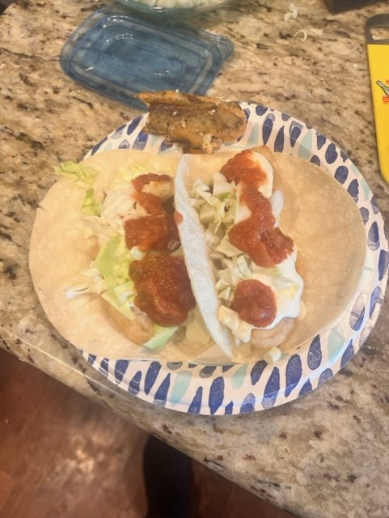

Fish Tacos
Simple fish taco recipe that is a clone of one of my favorite dishes

Ingredients
I make the white sauce in advance and chill in fridgerator.
Also, salt to taste. You can add garlic
and onion powder to batter for more
flavor.
Steps
- Step 1: Make white sauce
- Step 2: Mix flour and beer into a bowl. 1 cup leaves a bit of a 12oz remaining if you're thirsty....
- Step 3: Shred cabbage if not done so and set aside.
- Step 4: Heat oil for frying
- Step 5: Cut or portion fish into pieces, I prefer 1" by 3".
Its a matter of preference. I feel its a little easier to manage this way.
- Step 6: Dip your fish portions into batter one at a time making sure they are well coated.
drop them into the fryer and cook until done. Removing them and allowing to cool slightly.
- Step 7: Assemble Tacos, I start with a tortilla, add white sauce and then fish followed by
cabbage. Then add salsa and a sqeeze of lime juice from a wedge.
- Step 8: Enjoy
Recipes